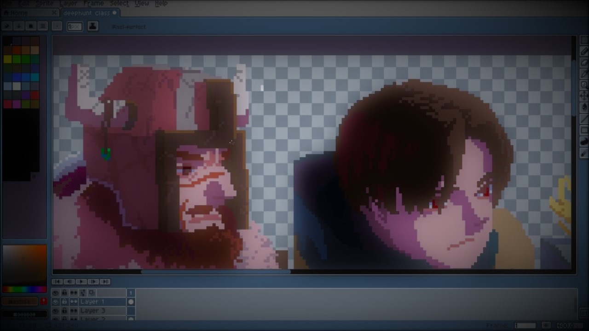

Aseprite
Aseprite — это проприетарный редактор изображений с доступным исходным кодом, предназначенный в первую очередь для рисования и анимации в пиксельной графике. Он работает в Windows, macOS и Linux и содержит различные инструменты для редактирования изображений и анимации, такие как слои, кадры, поддержка тайловых карт, интерфейс командной строки, сценарии Lua и другие.
Скачать